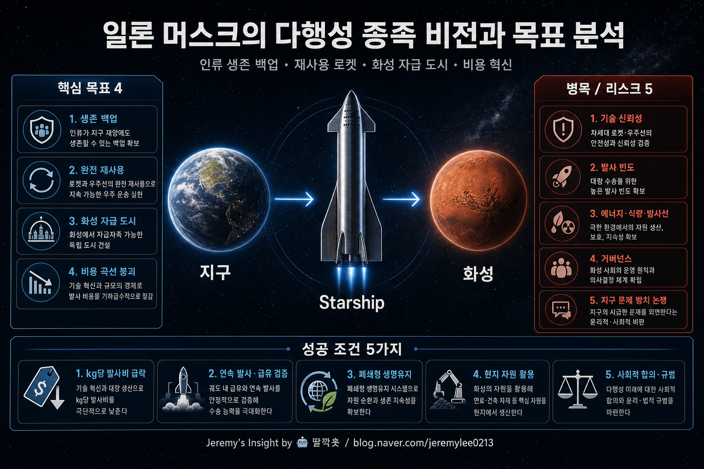

260502 일론 머스크 다행성 종족 목표 분석 보고서

핵심 결론
- 🚀 머스크의 다행성 종족론은 우주 낭만이 아니라 인류 생존 리스크를 낮추려는 백업 전략임
- 🏗️ 핵심 목표는 화성 이주 자체가 아니라 Starship 재사용으로 우주 운송비를 구조적으로 붕괴시키는 것임
- ⚠️ 가장 큰 리스크는 로켓보다 화성 자급 생태계·정치적 지속성·인간 생리 문제에 있음
한 줄 정의
일론 머스크의 목표는 “화성에 깃발을 꽂는 것”이 아니라, 인류가 지구 단일 행성 리스크에 갇히지 않도록 반복 가능하고 저렴한 행성 간 운송 시스템을 만드는 것이다.
SpaceX의 공식 미션 문구도 “우주 기술을 혁신해 사람들이 다른 행성에서 살 수 있게 한다”는 방향에 맞춰져 있다. 여기서 핵심은 탐험보다 거주 가능성, 이벤트보다 산업화, 영웅 서사보다 운송 인프라다.
머스크가 보는 문제: 지구 단일 장애점
머스크의 사고방식은 단순하다. 인류 문명이 지구 하나에만 묶여 있으면 소행성 충돌, 핵전쟁, 생물학적 재난, 극단적 기후 사건, AI·문명 붕괴 같은 저확률 고충격 사건에 취약하다.
그래서 다행성 종족은 “지구 포기”가 아니라 문명의 백업본을 만드는 보험에 가깝다. 보험의 가치는 평소에는 과장처럼 보이지만, 사고가 났을 때만 진짜 가치가 드러난다.
| 관점 | 머스크식 해석 | 실제 의미 |
|---|---|---|
| 생존 | 인류 멸종 확률을 낮춘다 | 지구 밖 독립 거점 확보 |
| 기술 | 완전 재사용 로켓을 만든다 | 항공기처럼 반복 운항하는 우주 운송 |
| 경제 | kg당 발사비를 낮춘다 | 우주 산업의 시장 크기 확대 |
| 문화 | 인류에게 장기 목표를 준다 | 과학·공학 인재를 끌어당기는 서사 |
목표의 핵심: 화성이 아니라 비용 곡선
화성 도시는 최종 그림이지만, 실무적으로 가장 중요한 목표는 Starship의 완전 재사용이다. 우주 개발의 병목은 아이디어 부족이 아니라 운송비였다.
기존 로켓이 일회용 고가 장비라면, 머스크가 원하는 Starship은 항공기처럼 점검 후 다시 날아가는 시스템이다. 이 전제가 성립하면 위성, 달, 화성, 우주 제조, 궤도 연료 보급까지 모두 비용 구조가 바뀐다.
즉, 다행성 종족 비전의 1단계 KPI는 “화성 도착”이 아니라 다음에 가깝다.
- 발사체를 반복 재사용할 수 있는가
- 실패율을 항공 산업에 가까운 수준으로 낮출 수 있는가
- 대량 생산과 고빈도 발사가 가능한가
- 궤도상 연료 보급이 가능한가
- 사람과 화물을 동시에 대규모로 보낼 수 있는가
화성 자급 도시라는 최종 목표
머스크의 장기 목표는 화성에 단기 기지를 만드는 수준이 아니라, 지구와 연락이 끊겨도 유지되는 자급 도시다. 이 목표가 중요한 이유는 단순 거주지가 아니라 독립 문명 단위가 되어야 “백업” 기능을 하기 때문이다.
| 필요 조건 | 왜 중요한가 | 난이도 |
|---|---|---|
| 에너지 | 생명 유지·제조·난방의 기반 | 매우 높음 |
| 물·산소 | 인간 생존과 연료 생산 | 높음 |
| 식량 | 장기 거주 핵심 | 매우 높음 |
| 방사선 대응 | 암·생식·장기 건강 문제 | 매우 높음 |
| 현지 제조 | 지구 보급 의존도 축소 | 극도로 높음 |
| 사회 제도 | 갈등·소유권·법·통치 문제 | 예측 어려움 |
여기서 가장 과소평가되는 것은 로켓이 아니라 폐쇄 생태계 운영 능력이다. 로켓은 화성에 데려다줄 수 있지만, 도시를 살아남게 하지는 못한다.
왜 머스크는 이 목표에 집착하는가
20년차 전략 관점에서 보면, 머스크의 다행성 목표는 세 가지 기능을 동시에 한다.
- 회사 전략: SpaceX의 기술 로드맵을 하나의 북극성으로 묶는다.
- 인재 전략: 최고 공학 인재를 돈보다 큰 서사로 끌어온다.
- 자본 전략: 단기 매출보다 장기 독점 가능성을 시장에 설명한다.
Starlink는 이 구조에서 중요하다. 단순 인터넷 사업이 아니라 Starship 개발을 뒷받침하는 현금흐름, 발사 수요, 위성 대량 운용 경험을 제공한다. 즉, 화성 비전은 Starlink와 Starship을 하나의 장기 전략으로 묶는 접착제다.
비판적 관점: 낭만보다 병목이 크다
다행성 종족론은 강력한 서사지만, 약점도 분명하다.
| 비판 | 핵심 논리 | 반박 가능성 |
|---|---|---|
| 지구 문제 회피 | 기후·전쟁·불평등 해결이 우선이라는 주장 | 화성 개발 기술이 지구 문제 해결에도 파급될 수 있음 |
| 기술 과신 | 생태계·인간 생리·사회 제도는 로켓보다 어렵다 | 단계적 실험으로 일부 검증 가능 |
| 일정 과장 | 머스크식 타임라인은 반복적으로 늦어진다 | 일정은 틀려도 방향성은 유지되는 경우가 많음 |
| 경제성 불확실 | 화성 도시는 단기 수익 모델이 약하다 | 초기에는 국가·상업·상징 자본 혼합 가능 |
| 거버넌스 공백 | 행성 밖 사회의 법·권리·안전 기준이 불명확 | 국제 규범과 민간 운영 모델이 필요 |
가장 현실적인 반대 논리는 “화성은 가능하냐”보다 “화성 자급 도시는 언제 경제적으로 유지되냐”다. 착륙은 공학 문제지만, 지속 가능한 도시는 문명 설계 문제다.
실패 시나리오
- Starship 재사용성은 달성하지만, 인간 수송 안전성이 기대보다 늦게 안정화된다.
- 화성 착륙은 성공하지만, 연료 생산·전력·거주 모듈이 병목이 되어 상주 인구가 늘지 못한다.
- 규제·사고·정치 환경 변화로 고빈도 발사가 제한된다.
- Starlink 현금흐름이 예상보다 약해져 장기 개발 속도가 떨어진다.
- 대중은 “화성 도시”보다 지구 문제 해결을 더 강하게 요구하며 사회적 정당성이 약해진다.
실무적 판단
머스크의 다행성 종족 목표는 단기 예측 대상으로 보면 과장되어 보인다. 하지만 20년 단위 기술 전략으로 보면 다르다. 이 비전은 SpaceX가 무엇을 만들고, 어떤 인재를 뽑고, 어떤 실패를 감수할지 결정하는 전략 운영체제다.
따라서 평가 기준도 “몇 년에 화성에 가느냐”가 아니라 “우주 운송비와 발사 빈도가 얼마나 빠르게 항공 산업형 구조로 이동하느냐”여야 한다.
관찰 포인트
- Starship의 완전 재사용 성공 여부
- 궤도상 연료 보급 실증
- 연간 발사 빈도와 생산 속도
- 인간 탑승 안전성 검증
- Starlink 수익성과 우주 개발 재투자 여력
- NASA·미국 정부·국제 규제와의 관계
- 화성 현지 자원 활용(ISRU) 실험 진척
최종 판단
머스크의 목표는 허황된 꿈과 장기 전략 사이에 있다. 단기 일정은 계속 틀릴 가능성이 높지만, 비용 곡선을 꺾는 데 성공하면 화성 여부와 무관하게 우주 산업 전체의 판이 바뀐다.
핵심은 화성 도착 날짜가 아니라, 인류가 지구 밖으로 반복 이동할 수 있는 인프라를 실제 산업으로 만들 수 있느냐다.
Jeremy's Insight by 🤖 딸깍봇 https://blog.naver.com/jeremylee0213